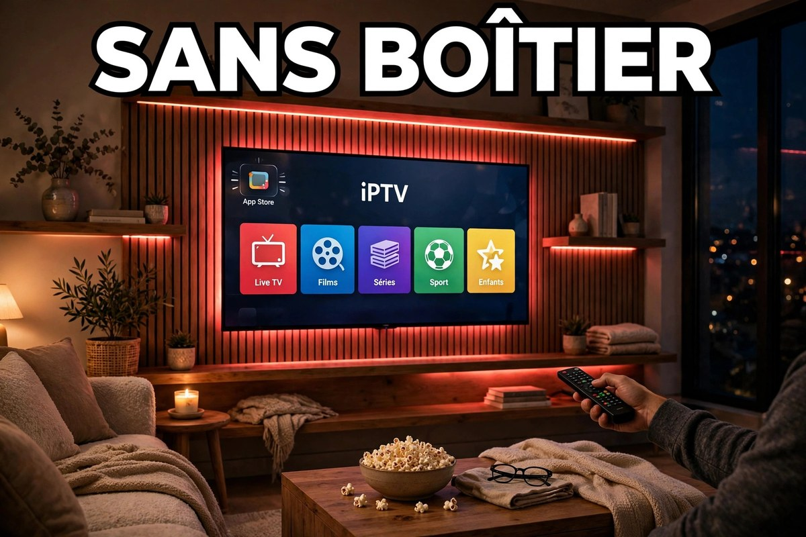
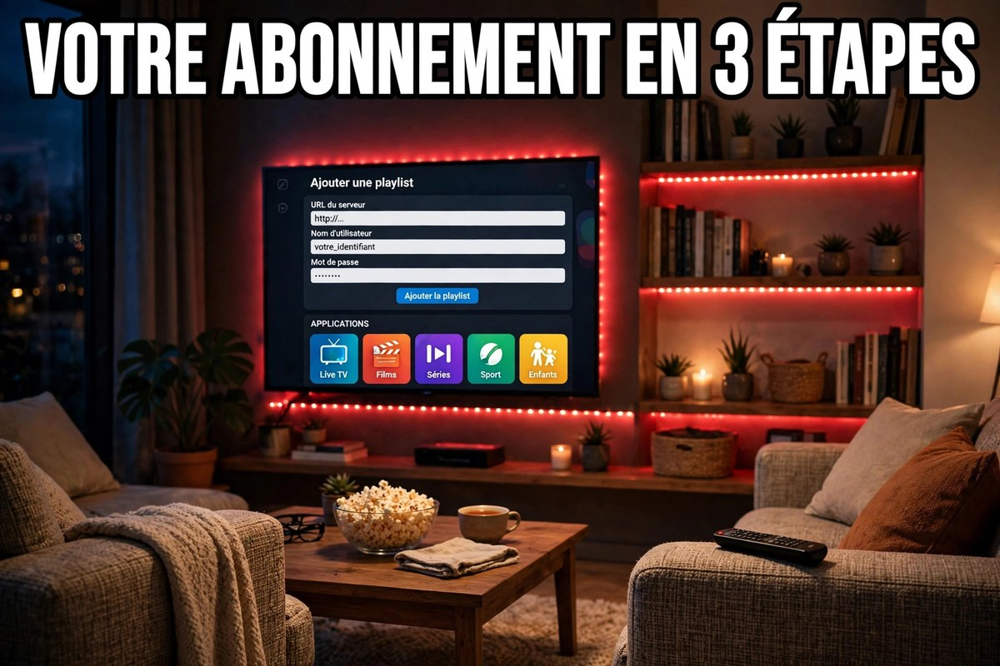

Installation Smart TV
Installer l’IPTV sur Smart TV
Installer l’IPTV sur Smart TV Samsung, LG, Sony, Philips ou TCL : choisir l’application, ajouter votre abonnement, régler l’EPG et résoudre les problèmes.

Pourquoi regarder l’IPTV directement sur votre Smart TV ?
Dernière vérification : 20 novembre 2026.
La Smart TV est souvent l’écran le plus simple pour profiter de l’IPTV : pas de boîtier supplémentaire, pas de câble HDMI en plus, une seule télécommande. Vous installez une application depuis la boutique de votre téléviseur, vous ajoutez votre abonnement Sunday IPTV et vous retrouvez vos chaînes en direct, le catalogue de films et séries et le guide des programmes directement sur votre écran principal.
Toutes les Smart TV ne se valent pourtant pas. Le système d’exploitation du téléviseur détermine les applications disponibles, la façon de les activer et parfois même la fluidité de lecture. Une télé Samsung ne se configure pas comme une LG, et une télé sous Google TV offre encore d’autres possibilités. Ce guide vous accompagne pas à pas, quel que soit votre modèle, et vous explique aussi comment résoudre les problèmes les plus courants.
Envie de tester ? Essai gratuit de 24 h, activation rapide et aide à l’installation sur WhatsApp.
Demander mon essai gratuitIdentifier le système de votre téléviseur

Avant d’installer quoi que ce soit, il faut savoir sur quel système tourne votre Smart TV. C’est lui qui décide des applications auxquelles vous avez accès. Voici les cas les plus fréquents en France :
- Samsung : système Tizen. Les applications s’installent depuis le Smart Hub, rubrique Applications.
- LG : système webOS. Les applications s’installent depuis la boutique LG (LG Content Store ou rubrique Applications selon l’année du modèle).
- Sony, Philips, TCL, Xiaomi et de nombreuses autres marques : système Android TV ou Google TV. Vous avez accès au Google Play Store, ce qui ouvre le plus grand choix d’applications.
- Certains modèles Hisense : système VIDAA, avec une boutique d’applications plus limitée.
- Autres systèmes (Titan OS, Fire TV intégré, etc.) : le choix d’applications varie d’un modèle à l’autre.
Pour vérifier, ouvrez le menu Paramètres de votre téléviseur puis la rubrique Assistance, À propos ou Informations sur le produit. Le nom du système et la version du logiciel y sont indiqués. Vous pouvez aussi chercher la référence exacte du modèle, inscrite au dos du téléviseur.
Ce qu’il vous faut avant de commencer
Quelques minutes de préparation vous éviteront la plupart des blocages. Assurez-vous d’avoir :
- une connexion internet stable : au moins 10 Mb/s pour la HD et 25 Mb/s pour la 4K ;
- de préférence un câble Ethernet entre la box internet et le téléviseur, plus fiable que le Wi-Fi pour le direct ;
- vos identifiants Sunday IPTV : soit un accès Xtream Codes (adresse du serveur, nom d’utilisateur et mot de passe), soit un lien de playlist M3U ;
- un téléviseur à jour : allez dans les paramètres et lancez la mise à jour du logiciel avant d’installer une application ;
- un smartphone ou un ordinateur à portée de main, utile pour certaines applications qui se configurent depuis un site web.
Si vous n’avez pas encore d’abonnement, vous pouvez demander un essai gratuit de 24 heures pour tester la qualité sur votre propre téléviseur avant de choisir une formule.
Installer l’IPTV sur une Smart TV Samsung (Tizen)
Sur les téléviseurs Samsung, toutes les applications s’installent depuis la boutique intégrée. Il n’est pas possible d’installer une application téléchargée ailleurs : il faut donc choisir parmi les lecteurs IPTV proposés dans le Smart Hub.
- Appuyez sur le bouton Home de la télécommande pour ouvrir le Smart Hub.
- Allez dans Applications, puis utilisez l’icône loupe pour rechercher un lecteur IPTV.
- Choisissez un lecteur reconnu, par exemple IBO Player, Smart IPTV ou IPTV Smarters lorsqu’il est disponible dans votre pays.
- Sélectionnez Installer, attendez la fin du téléchargement, puis ouvrez l’application.
- Selon l’application, ajoutez directement vos identifiants à l’écran ou notez l’adresse MAC et la clé d’appareil affichées pour activer le lecteur depuis le site de l’éditeur (voir la section consacrée à l’activation par adresse MAC).
La disponibilité des applications change régulièrement sur Tizen : une application présente l’an dernier peut avoir disparu de la boutique, et inversement. Si vous ne trouvez pas celle que vous cherchez, écrivez-nous : nous vous indiquons celle qui fonctionne actuellement sur votre modèle.
Installer l’IPTV sur une Smart TV LG (webOS)
Les téléviseurs LG fonctionnent sur le même principe que les Samsung : les applications viennent uniquement de la boutique officielle.
- Appuyez sur le bouton Home (la petite maison) de la télécommande.
- Ouvrez LG Content Store ou la rubrique Applications, selon l’année de votre téléviseur.
- Recherchez un lecteur IPTV, par exemple IBO Player, Smart IPTV, Duplex IPTV ou IPTV Smarters s’il est proposé.
- Installez l’application, puis lancez-la depuis la barre d’accueil.
- Ajoutez votre abonnement directement dans l’application ou activez-la via l’adresse MAC affichée à l’écran.
Sur webOS, la télécommande Magic (avec pointeur) facilite beaucoup la saisie des identifiants. Si vous avez une télécommande classique, prenez votre temps pour taper l’adresse du serveur : une seule erreur de caractère suffit à bloquer la connexion.
Smart TV sous Android TV ou Google TV
Si votre téléviseur Sony, Philips, TCL, Xiaomi ou autre fonctionne sous Android TV ou Google TV, vous avez de la chance : c’est la plateforme la plus souple pour l’IPTV. Vous avez accès au Google Play Store et à ses nombreux lecteurs.
- Ouvrez le Google Play Store depuis l’écran d’accueil (sur Google TV, passez par la recherche ou l’onglet Applications).
- Recherchez TiviMate IPTV Player, souvent considéré comme le lecteur le plus complet sur téléviseur, ou IPTV Smarters Pro.
- Installez l’application et ouvrez-la.
- Choisissez Ajouter une playlist, puis le type Xtream Codes et entrez vos identifiants.
Le fonctionnement est alors identique à celui d’une box Android. Consultez notre guide TiviMate pour aller plus loin : favoris, groupes de chaînes, enregistrement et fonctions Premium.
Activer une application par adresse MAC : comment ça marche ?
Beaucoup de lecteurs IPTV pour Samsung et LG ne vous demandent pas de taper vos identifiants avec la télécommande. Ils fonctionnent avec un système d’activation par adresse MAC, plus confortable une fois qu’on l’a compris.
- Ouvrez l’application sur le téléviseur : elle affiche une adresse MAC (une suite de chiffres et de lettres séparés par des deux-points) et souvent une clé d’appareil (device key).
- Sur votre smartphone ou votre ordinateur, rendez-vous sur le site de l’éditeur de l’application, rubrique de gestion des playlists.
- Entrez l’adresse MAC et la clé d’appareil, puis ajoutez votre abonnement : lien M3U ou identifiants Xtream Codes.
- Revenez sur le téléviseur et redémarrez l’application : vos chaînes se chargent.
La plupart de ces applications offrent une période d’essai, puis demandent une petite licence (quelques euros, à vie ou à l’année selon l’éditeur). Cette licence est indépendante de votre abonnement Sunday IPTV : elle rémunère le développeur du lecteur, pas le contenu.
Envie de tester ? Essai gratuit de 24 h, activation rapide et aide à l’installation sur WhatsApp.
Demander mon essai gratuitAjouter votre abonnement : Xtream Codes ou lien M3U

Lors de votre commande, nous vous envoyons vos accès sous deux formes. Il suffit d’en utiliser une seule.
La connexion Xtream Codes (recommandée)
C’est la méthode la plus pratique. Vous entrez trois informations : l’adresse du serveur (URL), votre nom d’utilisateur et votre mot de passe. L’application récupère automatiquement les chaînes, les films, les séries et le guide des programmes. En cas de mise à jour de la liste, tout se synchronise sans rien faire.
Le lien M3U
C’est une adresse web unique qui contient toute la liste. Elle fonctionne avec presque tous les lecteurs, y compris les plus anciens. Elle est longue à taper avec une télécommande : c’est pour cela que l’activation par adresse MAC, qui permet de la coller depuis un téléphone, est si appréciée.
Dans les deux cas, respectez scrupuleusement les majuscules, les minuscules et les caractères spéciaux. Un espace en trop ou un « l » pris pour un « 1 » suffit à provoquer une erreur de connexion.
Régler le guide des programmes (EPG)
Le guide électronique des programmes affiche ce qui passe maintenant et plus tard sur chaque chaîne. Avec une connexion Xtream Codes, il se charge généralement tout seul quelques minutes après le premier lancement.
Si le guide reste vide :
- laissez l’application ouverte quelques minutes, le premier chargement peut être long ;
- dans les réglages de l’application, lancez une mise à jour de l’EPG ;
- vérifiez que le fuseau horaire de l’application et du téléviseur correspond à la France ;
- si votre lecteur le demande, ajoutez l’adresse EPG que nous vous fournissons sur simple demande.
Optimiser l’image et la fluidité
Une fois l’application installée, quelques réglages font une vraie différence, surtout pendant les matchs en direct.
- Privilégiez le câble Ethernet. Le Wi-Fi des téléviseurs est souvent moins performant que celui d’un smartphone, en particulier si la box est dans une autre pièce.
- Désactivez les traitements d’image superflus. Les modes de lissage de mouvement et de réduction du bruit peuvent ajouter du retard ; le mode Cinéma ou Filmmaker donne une image plus naturelle.
- Choisissez la bonne qualité. Si votre débit est juste, une chaîne en Full HD stable vaut mieux qu’une chaîne en 4K qui coupe.
- Fermez les autres applications. Sur Tizen et webOS, les applications restées ouvertes consomment de la mémoire.
- Mettez à jour l’application et le téléviseur. Les mises à jour corrigent régulièrement des problèmes de lecture.
Problèmes fréquents et solutions
L’application ne trouve aucune chaîne
Vérifiez vos identifiants caractère par caractère, puis assurez-vous que l’adresse du serveur commence bien par http:// ou https:// selon ce que nous vous avons envoyé. Si vous utilisez l’activation par adresse MAC, vérifiez que la playlist a bien été enregistrée sur le site de l’éditeur, puis redémarrez l’application.
L’image se fige ou charge en boucle
Testez votre débit depuis le navigateur du téléviseur ou depuis un téléphone connecté au même réseau. Redémarrez la box internet et le téléviseur (débranché une minute). Si le problème persiste, consultez notre guide panne IPTV, qui détaille toutes les causes possibles.
L’application a disparu de la boutique
Les boutiques Samsung et LG retirent parfois des applications. Si elle est déjà installée, elle continue généralement de fonctionner. Sinon, choisissez un autre lecteur : votre abonnement Sunday IPTV fonctionne avec la plupart d’entre eux.
Le son est décalé par rapport à l’image
Dans les réglages du téléviseur, désactivez les traitements audio avancés ou réglez le décalage audio. Si vous utilisez une barre de son, essayez la sortie optique ou HDMI eARC.
Envie de tester ? Essai gratuit de 24 h, activation rapide et aide à l’installation sur WhatsApp.
Demander mon essai gratuitQuand ajouter un boîtier à votre Smart TV ?
Une Smart TV suffit dans la grande majorité des cas. Un boîtier devient intéressant si votre téléviseur est ancien, lent, ou si l’application que vous voulez n’existe pas sur son système. Pour une quarantaine d’euros, un Fire TV Stick ou une box Android TV apporte des applications plus complètes, plus de mémoire et des mises à jour régulières. Comparez les options dans notre guide quel boîtier IPTV choisir, ou suivez directement notre tutoriel installer l’IPTV sur Fire TV Stick.
Questions fréquentes
Mon abonnement fonctionne-t-il sur toutes les Smart TV ?
Oui, dès lors qu’une application IPTV est disponible sur votre téléviseur. C’est le cas sur Samsung, LG et toutes les télés Android TV ou Google TV. Sur les systèmes plus fermés, un petit boîtier HDMI règle la question.
Dois-je payer l’application en plus de l’abonnement ?
Certaines applications sont gratuites, d’autres demandent une petite licence après un essai. Cette licence revient à l’éditeur de l’application et ne fait pas partie de l’abonnement Sunday IPTV.
Puis-je utiliser mon abonnement sur la télé du salon et celle de la chambre ?
Un abonnement correspond à une connexion à la fois. Vous pouvez l’installer sur les deux téléviseurs et les utiliser à tour de rôle. Pour regarder sur deux écrans en même temps, demandez-nous une offre multi-connexions.
Faut-il une box internet en fibre ?
Non. Une connexion ADSL stable suffit pour la HD. La fibre est surtout utile pour la 4K et lorsque plusieurs personnes utilisent internet en même temps dans le foyer.
Combien de temps prend l’installation ?
Comptez dix à quinze minutes pour une première installation, activation comprise. Ensuite, l’application s’ouvre comme n’importe quelle chaîne de votre téléviseur.
Testez Sunday IPTV gratuitement
Essai gratuit de 24 heures, activation rapide et support 24/7 sur WhatsApp.
Demander mon essaiÀ lire aussi

Les meilleures applications IPTV en 2026
Les meilleures applications IPTV en 2026 : TiviMate, IPTV Smarters Pro et les lecteurs pour Smart TV et Apple, comparés selon votre appareil et votre usage.

Quel boîtier IPTV choisir en 2026 ?
Quel boîtier IPTV choisir en 2026 ? Fire TV Stick, box Android TV, Apple TV 4K ou boîtier MAG : comparatif, critères qui comptent et erreurs à éviter.

Panne IPTV : résoudre les coupures et le buffering
Panne IPTV, buffering ou chaîne qui coupe ? Diagnostic en 5 minutes, causes fréquentes, réglages réseau et appareil pour retrouver une lecture fluide.